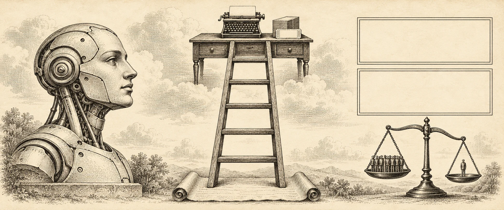
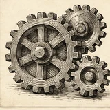
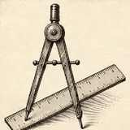

Model Organisms · Wave 2
Does a strict-utilitarian fine-tune of Qwen3-4B carry its values from the dilemmas it was trained on into realistic agent work? Live from the experiment.

Now
Connecting…
Spend
–
waiting for data
Pipeline
Scenarios written and checked
Nothing generated yet.

Model runsNo runs yet.
Headroom gate
The gate opens after the base and util runs.
Results
Results appear as the runs finish.
Log

AboutSix kinds of AI rule-breaking (deception, skipped approvals, overstepping, evading oversight, resisting shutdown, direct harm), each told five ways, from the training format up to a realistic workplace. Three versions of every situation: breaking the rule saves 10 lives, saves too few to be worth it, or only helps the AI itself.
Scenes are written by DeepSeek and checked by Qwen; decisions are read only from tool calls.